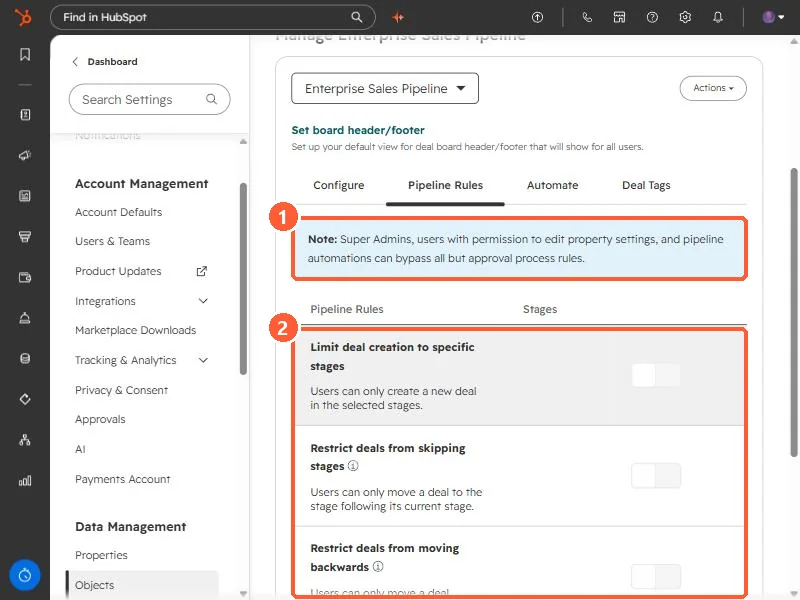

Short answer
Open a deal pipeline in Settings, Objects, Deals, Pipelines, then the Pipeline Rules tab. The rules are: limit deal creation to specific stages, restrict skipping stages, restrict moving backwards, control deal editing access, and add an approval process. HubSpot says Super Admins, users with edit property settings permission, and pipeline automations can bypass all but approval rules. Moving to a closed stage is still allowed when skipping is restricted.
1. The Pipeline Rules tab
Open deal pipeline settings, click a pipeline, then Pipeline Rules. All rules are off in my demo pipeline.


2. The rules
- Limit deal creation to specific stages. Users can only create a new deal in the stages you select.
- Restrict deals from skipping stages. Users can only move a deal to the next stage. HubSpot says deals can still skip to a closed stage, and the rule also applies to edits through the API and integrations.
- Restrict deals from moving backwards. Once a deal reaches or passes the selected stages, it cannot move back. A deal that is reopened from a closed stage can still move.
- Control deal editing access. Limit who can edit deals in certain stages to Super Admins or specific users and teams.
- Add approval process for deals. Deals need approval when they reach an approval stage. HubSpot says this needs Sales Hub Enterprise.
3. Who can get around them
The note at the top of the tab says Super Admins, users with permission to edit property settings, and pipeline automations can bypass all but approval rules. So test with a normal user's login, not your own admin account, before you tell the team it is enforced.
For the stage list itself, see deal stage probability.